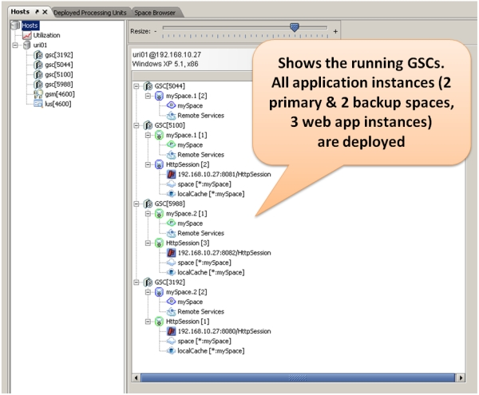
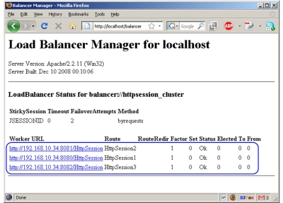

Step 2 - Enabling HTTP Session Failover and Fault Tolerance
Step summary: Learn how to make your application's HTTP session store highly available and fault tolerant, by backing it with GigaSpaces XAP's data grid - the Space
Example Application Overview
The example application is a completely standard JEE web application. All steps in this tutorial can be applied to any standard JEE web application, but we'll use this one for the sake of simplicity.
The application is composed of a JSP page and a servlet.
The UpdateSessionServlet is responsible for retrieving request parameters and adding their values to the HttpSession as session attributes, and the SessionContents.jsp displays the session attributes and renders two input fields, Name and Value for the user to input new session attributes.
Click here for code snippets and screenshot of the sample application...
Here's a snippet of the doPost method of the UpdateSessionServlet class:
public class UpdateSessionServlet extends HttpServlet { /** * @see HttpServlet#doGet(HttpServletRequest request, HttpServletResponse response) */ protected void doGet(HttpServletRequest request, HttpServletResponse response) throws ServletException, IOException { HttpSession session = request.getSession(true); // set session info if needed String dataName = request.getParameter("dataname"); String dataValue = request.getParameter("datavalue"); if (isStringNotEmpty(dataName) && isStringNotEmpty(dataValue)) { session.setAttribute(dataName, dataValue); } request.getRequestDispatcher("SessionContents.jsp").forward(request, response); } private boolean isStringNotEmpty(String str) { return (str != null && str.trim().length() > 0); } ... }
Here's the code snippet from SessionContents.jsp that displays the session attributes:
<h3>Session Contents:</h3> <% Enumeration names = session.getAttributeNames(); while (names.hasMoreElements()) { String name = (String) names.nextElement(); String value = (String)session.getAttribute(name); %> <%= name %> = <%= value %><br/> <%} %> <p/>
When opening this page in a web browser, it looks as follows:
Building the Example
 Steps to build the application:
Steps to build the application:
The first thing you need to do if you haven't already done so, is Download GigaSpaces and set up your development environment.
Next, you should open a shell / command prompt window in the example directory, and type the following:
build.(sh/bat) dist
You should see an output similar to the following:
C:\GS-Releases\gigaspaces-xap-premium-8.0.0-ga\examples\web\session>build dist
Buildfile: build.xml
build:
[mkdir] Created dir: C:\GS-Releases\gigaspaces-xap-premium-8.0.0-ga\examples\web\session\WebContent\WEB-INF\classes
[javac] Compiling 1 source file to C:\GS-Releases\gigaspaces-xap-premium-8.0.0-ga\examples\web\session\WebContent\WEB-INF\classes
dist:
[jar] Building jar: C:\GS-Releases\gigaspaces-xap-premium-8.0.0-ga\examples\web\session\HttpSession.war
BUILD SUCCESSFUL
Total time: 1 second
At the end of the process, the web application's war file will be created in the example's directory.
Recommended Space Topologies for Backing Your HTTP Session
GigaSpaces supports various data grid topologies, all can be used to back your space.
The recommended topology for your application depends on various application characteristics, such as the size of your web application cluster, the overall size of your session store (the total memory space of all user sessions) and the nature of your load balancing policy (sticky, round-robin, random, etc.):
- A Partitioned with backup topology is the most recommended topology, and is especially good for situations where the cluster size is higher than 2 or 3 nodes, and when you expect that the overall size of the HTTP session store will exceed the capacity of a single machine (or simply cannot predict how big it's going to be). In a partitioned topology, the data written to the data grid (in our case the HTTP session attributes) is spread across multiple machines. In such case, it makes sense to deploy the space on separate JVMs, and even separate machines, than these of the web application. This is because collocation has little benefit in this case, and the space will most likely take vital memory resources from the web application's JVM. Due to the nature of partitioning it id highly likely that the web application will access a partition other than the one running collocated with it anyway. Nevertheless, you can achieve in memory read speeds for the HTTP session in a non-collocated deployment by fronting the partitioned space with a local cache. The local cache caches session attributes read by the local web application in the memory space that web application instance. It can be limited in size so you have full control over the local application's memory without loosing any session information, since the master copy is always stored at the central Space.
High availability is achieved by the backup copies of each partition. You can choose between synchronous and asynchronous replication between primary and backup partitions. Synchronous replication will mean full data consistency incase of failover, at the expense of a slightly decreased write performance. Asynchronous replication may cause data loss in case of failover, but will have a slightly higher write performance.

- A Replicated topology is only recommended if you have a very small cluster (2 or 3 instances) and know for certain that the overall size of the HTTP session store will not exceed the memory size of a single node. In a replicated topology, every piece of data is replicated to all cluster members, so every member has a full copy of all the data. This is why the capacity of this topology is limited to the capacity of the smallest JVM in the cluster. Also, incase the clusters is larger than 2 or 3 nodes, replication costs can be very high in terms of performance and network traffic.
Since data is the same on all data grid nodes in this topology, it also makes sense to use an embedded space deployment, where each of the space instances runs inside the web container instance. You can choose between synchronous or asynchronous replication, depending on your consistency requirements and load balancing scheme. Asynchronous replication might produce application inconsistencies when used with non-sticky load balancing policies, but will produce slightly higher write performance. On the other hand, synchronous replication will provide better consistency at the cost of synchronous write to all space instances when the session is updated.
Note that when using a non-sticky load balancing policy with a web application that updates the session faster than it is replicated across the cluster (this can happen mainly in AJAX applications which poll the web server periodically, e.g. every second), the space will throw error indicating that it cannot resolve the conflict. Therefore, for the replicated topology, it is highly recommended to use sticky sessions.

Backing Your HTTP Session with the Space
To save the application's HTTP session store on top of the space, you will have to use a number of deployment properties. If you're not familiar with the configuration of deployment properties, please make sure to review Step 1 of this tutorial which also includes a detailed explanation on how to configure these properties in the GigaSpaces XAP environment.
The first property you have to specify is the jetty.sessions.spaceUrl, which specifies the URL of the space with which you want to back the HTTP session store. You can specify a plain space URL, e.g. jini://*/*/sessionSpace?useLocalCache or /./sessionSpace?cluster_schema=replicated. If you are using a pu.xml file to configure the Space (and other elements of your web application - since the pu.xml file is full fledged Spring configuration file), you can use it to back the HTTP session store. The sample application contains the following pu.xml file:
<beans ...> <!-- A bean representing a space (an IJSpace implementation). Note, we perform a lookup on the space since we are working against a remote space. --> <os-core:space id="space" url="jini://*/*/mySpace" lookup-timeout="20000"/> <os-core:local-cache id="localCache" space="space"/> </beans>
To cofigure the HTTP session to work with it, you need to set the value bean://localCache to the jetty.sessions.spaceUrl property.
Naturally there are additional deployment properties which are related to the HTTP session store configuration.
The following table summarizes the available deployment properties:
| Property Name | Description | Example values | Mandatory? |
|---|---|---|---|
| jetty.sessions.spaceUrl | specifies the URL of the space with the HTTP session store will be backed. Use the bean:// notation to reference a space proxy defined within the META-INF/spring/pu.xml file. | jini://*/*/sessionSpace?useLocalCache /./sessionSpace?cluster_schema=replicated bean://sessionSpace |
Yes |
| jetty.sessions.scavengePeriod | Determines how often the web container will check for expired sessions. Set in seconds and defaults to 300 seconds (5 minutes) | 300 | No |
| jetty.sessions.savePeriod | How often an actual update of a non dirty session will be performed to the Space. Set in seconds and defaults to 60 seconds. This is useful for cases where a session attribute is not updated explicitly using the HttpSession#setAttribute method. More importantly, it makes sure to report the last time the user has accessed the application to the space so that the user session will not expire | 60 | No |
| jetty.sessions.timeout | Determines the HTTP session timeout in minutes (similar to session-timeout element in web.xml. Defaults to 30 minutes | 15 | No |
Putting It All Together
Now that we've gone over all the details, let's see everything in action. In this section we will start a partitioned space with 2 primaries and 2 backups. We will deploy 3 web application instances to the GigaSpaces environment. We will then start Apache HTTP server and the Apache load balancer agent (see Step 1 of this tutorial for more details), and connect to the application from the load balancer. We will write some objects into the HTTP session and verify that they are indeed there. Finally, we will terminate one of the running containers (the one which handled our requests) and watch the failover and self-healing process in action, verifying that session information was not lost. Let's start:
- Build the application as described earlier in this tutorial
- Start one GSM by calling <gs root>/bin/gsm.(sh/bat)
- Start four GSCs by calling <gs root>/bin/gsc.(sh/bat) four times
- Start the GigaSpaces user interface by calling <gs root>/bin/gs-ui.(sh/bat). When the user interface is started, you should see the four GSCs presented in it.
Click to view screenshot...
- Deploy the application using the provided build script, by calling build.(sh.bat) deploy. This will start a partitioned space with 2 primaries and 2 backups, and then three instances of the web application with the HttpSession backed by the space. The web application will utilize the GigaSpaces local cache functionality to front the remote space and gain in-memory read speeds for the HttpSession attributes. Once deployment is successful, you should see in the UI the space's two primary and two backup partitions, and 3 instances of the web application.
Click to view screenshot...
- If you haven't already done so, start the Apache HTTP server on port 80 (the default).
- Start the load balancer agent by calling the script <gs root>/tools/apache/apache-lb-agent.(sh/bat) -apache <Apache home>. Apache home is the location of the Apache installation on your disk.
Click to show expected output...Starting apache-lb-agent with line: "c:\Java\jdk1.6.0_11\bin\java" -server -XX:+AggressiveOpts -showversion -Xmx512m -Xbootclasspath/p:.; "c:\GS-Releases\gigaspaces-xap-premium-8.0.0-ga\bin\\..\lib\platform\xml\serializer.jar"; "c:\GS-Releases\gigaspaces-xap-premium-8.0.0-ga\bin\\..\lib\platform\xml\xalan.jar"; "c:\GS-Releases\gigaspaces-xap-premium-8.0.0-ga\bin\\..\lib\platform\xml\xercesImpl.jar"; "c:\GS-Releases\gigaspaces-xap-premium-8.0.0-ga\bin\\..\lib\platform\xml\xml-apis.jar" -Dlb.vmDir="c:\GS-Releases\gigaspaces-xap-premium-8.0.0-ga\bin\\../tools/apache" -Dcom.gs.jini_lus.locators= -Dcom.gs.jini_lus.groups=myGroup -Dsun.rmi.dgc.client.gcInterval=36000000 -Dsun.rmi.dgc.server.gcInterval=36000000 -Djava.rmi.server.hostname=""HOST01"" -Djava.rmi.server.RMIClassLoaderSpi=default -Djava.rmi.server.logCalls=false "-Dcom.gs.home=c:\GS-Releases\gigaspaces-xap-premium-8.0.0-ga\bin\\.." -Djava.security.policy="c:\GS-Releases\gigaspaces-xap-premium-8.0.0-ga\bin\\..\policy\policy.all" -classpath ;.;"c:\GS-Releases\gigaspaces-xap-premium-8.0.0-ga\bin\\..";.; "c:\GS-Releases\gigaspaces-xap-premium-8.0.0-ga\bin\\..\lib\required\commons-logging.jar"; "c:\GS-Releases\gigaspaces-xap-premium-8.0.0-ga\bin\\..\lib\required\gs-openspaces.jar"; "c:\GS-Releases\gigaspaces-xap-premium-8.0.0-ga\bin\\..\lib\required\gs-runtime.jar"; "c:\GS-Releases\gigaspaces-xap-premium-8.0.0-ga\bin\\..\lib\required\spring.jar";.;.; "c:\GS-Releases\gigaspaces-xap-premium-8.0.0-ga\bin\\..\lib\optional\spring\cglib-nodep-2.1_3.jar"; "c:\GS-Releases\gigaspaces-xap-premium-8.0.0-ga\bin\\..\lib\optional\spring\common-annotations.jar";.; "c:\GS-Releases\gigaspaces-xap-premium-8.0.0-ga\bin\\..\lib\platform\jdbc\h2.jar"; "c:\GS-Releases\gigaspaces-xap-premium-8.0.0-ga\bin\\..\lib\platform\jdbc\hsqldb.jar";.; "c:\GS-Releases\gigaspaces-xap-premium-8.0.0-ga\bin\\..\lib\platform\velocity\velocity-dep-1.5.jar"; org.openspaces.pu.container.jee.lb.apache.ApacheLoadBalancerAgent -apache c:\Apache2.2 java version "1.6.0_11" Java(TM) SE Runtime Environment (build 1.6.0_11-b03) Java HotSpot(TM) Server VM (build 11.0-b16, mixed mode) Log file: c:\GS-Releases\gigaspaces-xap-premium-8.0.0-ga\bin\..\logs\2011-01-10~16.13-gigaspaces-service-host01-9780.log Starting Apache Load Balancer Agent... groups [mGroup], locators [null] apachectl Location [c:\Apache2.2/bin/httpd.exe] config directory [c:\Apache2.2/conf/gigaspaces] update config interval [10000ms] Detecting existing config files... Done detecting existing config files LUS Discovered [com.sun.jini.reggie.RegistrarProxy[registrar=d9deb1b7-284c-4bab-a7db-1de6e62225e3 DynamicSmartStub [ImplObjClass: com.sun.jini.reggie.GigaRegistrar, ConnectionURL: NIO://HOST01:1460/pid[4600]/25815186111001_1_9050067126870901209, MaxConnPool: 1024 ]]] Started Apache Load Balancer Agent successfully Make sure Apache is configured with [Include c:\Apache2.2\conf\gigaspaces/*.conf] [HttpSession]: Adding [c86734c7-5f9e-405d-b7ad-2555a42aac94] [192.168.10.27:8080/HttpSession] [HttpSession]: Adding [73b86b5c-01f4-4d4b-9a45-a03b7f0be613] [192.168.10.27:8081/HttpSession] [HttpSession]: Adding [99561d6b-81a0-4d56-84ef-6fb446857fc6] [192.168.10.27:8082/HttpSession] [HttpSession]: Detected as dirty, updating config file... [HttpSession]: Using balancer template [c:\GS-Releases\gigaspaces-xap-premium-8.0.0-ga\bin\..\tools\apache\balancer-template.vm] Jun 10, 2009 4:13:44 PM org.apache.velocity.runtime.log.JdkLogChute log INFO: FileResourceLoader : adding path '.' [HttpSession]: Updated config file Executing ["c:\Apache2.2/bin/httpd.exe" -k restart]... Executed ["c:\Apache2.2/bin/httpd.exe" -k restart], exit code [0]
- Now let's verify that the application works as expected. Assuming Apache runs on your local machine on port 80, open you web browser and point it to http://localhost/HttpSession/. You should see the application's welcome page. Another way to verify this is point your web browser to http://localhost/balancer. You should see the summary screen of Apache's load balancing module. In this screen you should see listed the two running web containers.
Click to view screenshots...
- Type in one or two session attributes by filling out the "Field" and "Value" text boxes and clicking submit. You should see them above the text boxes. This means they were written to the http session.
Demonstrating Failover & Self Healing
Now let's deliberately terminate one of the GSCs on which the application is deployed:
- Locate one of the GSCs on which a request was received. To do that, check the console of the running GSCs and find the one that has shows the following output one or more times at the bottom:
********** Got Request **********
- Next, terminate the process of the GSC you located. Quickly switch to the GigaSpaces user interface - you will see that this GSC has disappeared. You will also see that the application and space instances which ran on the terminated GSC are re-instantiated on one of the existing GSCs. So in effect, the application self-healed itself so that all components are still running!
- The load balancer agent will pick up the change in runtime state, and will update the apache load balancer (this may take a few seconds). You can now refresh the page in your web browser and see the session attributes you entered before still appear on the screen, and everything still works as before.
What's Next?
 Step Three - Scaling the Data Access Layer - Shows how to access the space from within your web application as a potential replacement for direct database access.
Step Three - Scaling the Data Access Layer - Shows how to access the space from within your web application as a potential replacement for direct database access.
Or return to the GigaSpaces for Web Applications Tutorial.